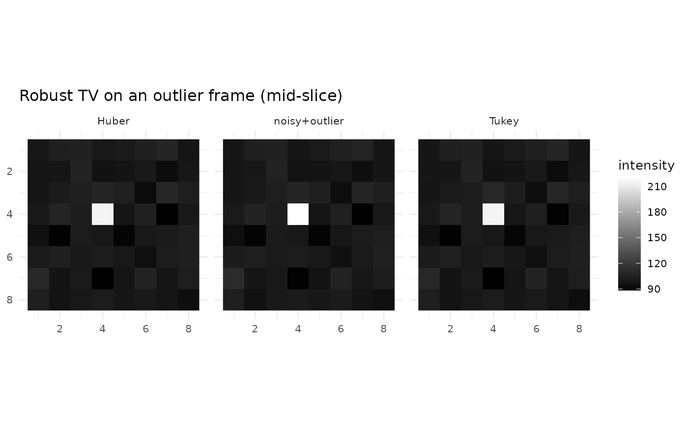

Robust TV: Huber and Tukey Data Terms
fmrismooth authors
2025-08-28
robust-tv.RmdRobust losses tolerate outliers better than the standard squared error. In fMRI, spikes or motion corruption can bias classical TV. The Huber loss behaves quadratically for small residuals and linearly for large ones; Tukey’s biweight further down‑weights extreme outliers.
stv_robust4d() implements robust data terms with
space–time TV priors. Thresholds are derived from a noise estimate if
not set explicitly.
Parameters in practice
lambda_s and lambda_t are the TV weights as
in standard TV. Select loss = "huber" or
loss = "tukey". The Huber threshold delta and
Tukey cutoff cthresh determine the transition from inlier
to outlier behavior; leaving them NULL estimates them from
the data. The alpha parameter tunes the Tukey shape.
Temporal weights can reduce smoothing across high‑motion transitions:
provide per‑frame motion parameters via motion_params, or
pass explicit temporal_weights.
Example
d4 <- c(8, 8, 8, 10)
base <- array(100, dim = d4) + array(rnorm(prod(d4), sd = 5), dim = d4)
base[4,4,4,5] <- 220 # inject an outlier
rob_huber <- tv_robust4d(base, loss = "huber", iters = 20L)
rob_tukey <- tv_robust4d(base, loss = "tukey", iters = 20L)
c(var_huber = var(as.vector(rob_huber)),
var_tukey = var(as.vector(rob_tukey)))
#> var_huber var_tukey
#> 28.89872 28.90254
# visualize the frame containing the outlier, mid-slice
zmid <- ceiling(d4[3]/2); t_spike <- 5
viz <- rbind(
slice_df4d(base, zmid, t_spike, "noisy+outlier"),
slice_df4d(rob_huber, zmid, t_spike, "Huber"),
slice_df4d(rob_tukey, zmid, t_spike, "Tukey")
)
ggplot(viz, aes(x, y, fill = val)) + geom_raster() + coord_fixed() + scale_y_reverse() +
scale_fill_gradient(low = "black", high = "white") + facet_wrap(~method) + theme_minimal(base_size = 10) +
labs(title = "Robust TV on an outlier frame (mid-slice)", x = NULL, y = NULL, fill = "intensity")
The robust losses reduce the influence of isolated spikes relative to
standard TV. When artifacts correlate with motion, supplying
motion_params improves temporal selectivity.